Clases y tipos de datos
Escrito por Adrián Quiroga Linares.
2.1 Tipos de Datos Primitivos
- Tienen un tamaño fijo
- Tienen una correspondencia directa con los tipos de datos que es posible representar en un computador
- En el momento de sus declaración se realiza automáticamente la reserva de memoria para la variable
- NO TIENEN MÉTODOS
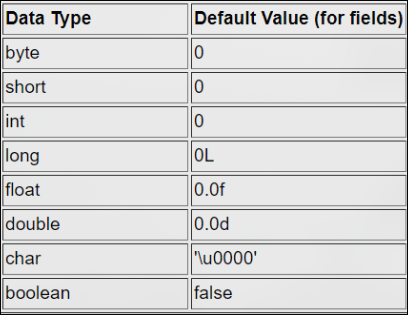
2.1.1 Wrappers
Los tipos de datos primitivos no son clases, puesto que no encapsulan ni datos ni métodos que acceden y modifican dichos datos, sino que están directamente vinculados a los valores de las variables.
Para hacer consistente el esquema de tipos de datos de Java con programación orientada o objetos de cada tipo de datos primitivos se han definido wrappers, que proporcionar métodos que facilitan operaciones comunes sobre los datos
Los métodos de los wrappers de los tipos primitivos permiten obtener el valor del dato; convertir el dato a una cadena de texto y viceversa; o convertir el dato a otros tipos de datos primitivos.
Integer a = new Integer(10);
System.out.println("Valor de a en decimales: " + a.doubleValue());
Integer b = new Integer("18");
System.out.println("Valor de b: " +b);
Esto nos daría como salida 10.0 y 18.
Cosas que una vez sepas lo que es el aliasing te serán útiles
El aliasing de los wrappers
Aliasing ocurre cuando dos o más referencias apuntan al mismo objeto en memoria. En Java, los wrappers (como Integer, Double, Character, etc.) son objetos, por lo tanto es posible que dos variables apunten al mismo objeto wrapper.
Integer a = new Integer(5);
Integer b = a; // b y a apuntan al mismo objeto
b = 10; // Ahora b apunta a un nuevo objeto, a sigue apuntando al original
En este ejemplo, al principio, a y b apuntan al mismo objeto (Integer(5)), por lo que hay aliasing.
Nota:
- Los wrappers en Java son inmutables, es decir, no puedes cambiar el valor interno después de la creación.
- Sin embargo, puedes cambiar a qué objeto apunta la referencia, pero no el contenido del objeto en sí.
- El aliasing ocurre entre referencias, no entre los valores internos.
Integer x = Integer.valueOf(100);
Integer y = x; // Alias: x y y apuntan al mismo objeto Integer
System.out.println(x == y); // true
y = Integer.valueOf(200); // Ahora y apunta a otro objeto
System.out.println(x == y); // false
- Sí, puede haber aliasing entre wrappers en Java.
- Pero, dado que los wrappers son inmutables, el valor interno no puede cambiar a través del alias, solo la referencia puede cambiar de objeto.
La macabra integer pool
En Java, existe una especie de "pool" de objetos Integer para valores en el rango de -128 a 127 (inclusive). Este mecanismo es similar al String pool pero aplicado a ciertos wrappers numéricos como Integer, Short, Byte, Character y Long.
Cuando se crea un Integer Java reutiliza objetos existentes para valores entre -128 y 127. Si usamos el operador == para comparar dos Integer dentro de ese rango, dará true si ambos provienen del pool. == COMPARA LAS REFERENCIAS NO EL VALOR.
Integer a = 100;
Integer b = 100;
System.out.println(a == b); // true (ambos usan el pool)
Integer c = 128;
Integer d = 128;
System.out.println(c == d); // false (no usan el pool, son objetos distintos)
El Integer pool mejora el rendimiento y reduce el uso de memoria para valores pequeños que son muy usados.
Respuesta corta:
Sí, en el rango de -128 a 127 los Integer se comportan como el "String pool": se reutilizan los objetos para ahorrar memoria y acelerar comparaciones.
Autoboxing & Unboxing
El uso de wrappers proporciona a Java gran versatilidad en el manejo de datos, pero genera código difícil de entender. El uso de autoboxing y unboxing resuelve este problema, ya que permite tratar un wrapper como si fuese un tipo de dato primitivo, y viceversa; pudiendo elegir en cada momento el comportamiento que se desee.
-
Autoboxing: convierte un tipo primitivo a un objeto de la correspondiente clase wrapper. Lo usamos cuando:
- Un método tiene como argumento un wrapper recibe un valor de tipo primitivo
- A un tipo primitivo se le asigna un objeto de un wrapper
-
Unboxing: convierte un objeto de una clase wrapper al tipo primitivo correspondiente. Se usa cuando:
- Un método que tiene como argumento un tipo primitivo recibe un objeto un wrapper.
- A un tipo primitivo se le asigna un objeto de un wrapper.
Integer a = 10; //autoboxing
int a = new Integer(10)//unboxing
[!Buenas Prácticas]
- Normalmente, es preferible usar tipos primitivos porque simplifican el código
- Es mejor usar wrappers para convertir entre tipos primitivos, sobre todo cuando en esa conversión se manejan cadenas de texto.
2.2 Referencias
En Java los nombres de los objetos son referencias a la posición de memoria que está reservada para eellos.
- Cuando se asigna un objeto
Aotro objetoB, en realidad no se realiza una copia de la memoria que ocupaAen la posición de memoria que ocupaB. - Se está realizando una asignación de la referencia del objeto
Aa la referencia al objetoB, lo que es decir, ambas referencias apuntan a la misma posición de memoria. - La memoria del objeto
Aya no está disponible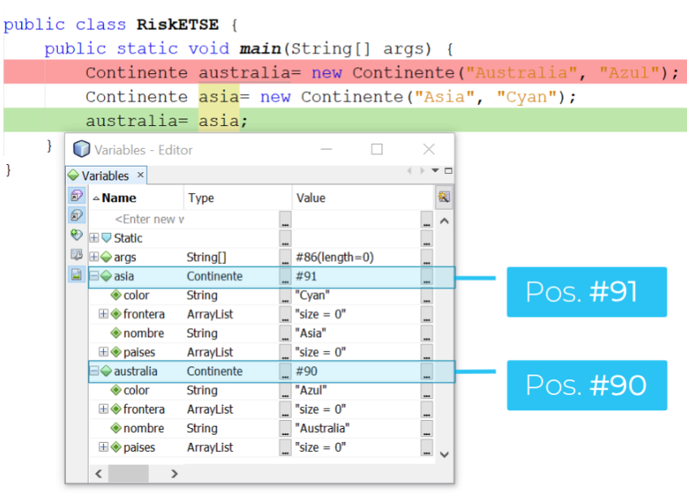
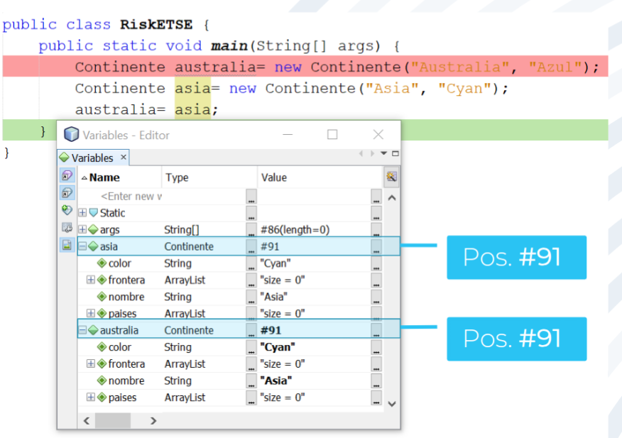
2.2.1 Aliasing
- El aliasing es la asignación de referencias entre dos objetos.
- Es una de las principales característas de la mayoría de los lenguajes orientados a objetos
- Evita la encapsulación de datos pues permite modificar el valor de atributos desde métodos de fuera de sus clases. Por tanto, los programas son mucho más difíciles de mantener, ya que los atributos de tipo objeto se pueden modificar sin ningún tipo de control de su clase
Otro ejemplo:
public static void main (String[] args){
Jugador jugador = new Jugador("Luis", Valor.EJERCITO_AZUL, mapa);
ArrayList <Pais> paises = jugador.getPaises(); //aliasing
paises.remove(0)
}
Cómo y cuándo evitar el aliasing
Es muy difícil desarrollar programas en los que nunca se use el aliasing, además evitarlo reduce el rendimiento, por lo que se debe seleccionar muy bien cuándo se evitará, pues no siempre es adecuado hacerlo.
El aliasing sólo se puede vitar si se introduce manualmente código que genere una nueva referencia del mismo objeto. Este código tiene que:
- Reservar memoria para el objeto
- Copiar los atributos del objeto (si son objetos a su vez, se debe generar una nueva referencia para ellos también)
Método clone:
El método clone genera una copia exacta de un objeto y la almacena en una posición diferente de la que ocupa el objeto original. El programador debe implementar el método para cada clase de cuyos objetos se desea realizar copias profundas.
- Copia profunda: se reserva memoria para todos los atributos del objeto, incluso todo los elementos de un conjunto de datos
@Override
public Object clone(){
try{
super.clone();
}
catch(CloneNotSupportedException exc){
System.out.println(exc.getMessage());
}
Jugador jugador = new Jugador(nombre, color, (Mapa) mapa.clone());
ArrayList<Pais> paisesClonados = new ArrayList<>();
for(int i; i<paises.size();i++){
paisesCLonados.add((Pais) paises.get(i).clone)
}
return jugador
}
2.3 Máquina Virtual de Java
Java es un lenguaje interpretado cuya ejecución corre a cargo de lo que se denomina máquina virtual de Java.
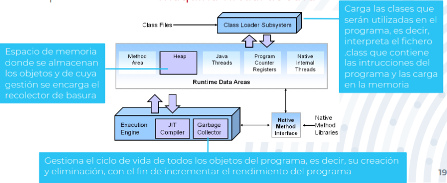
2.4 Almacenamiento
2.4.1 Almacenamiento de datos
Dependiendo del tipo de dato y del lugar del programa en el que se definen, los datos se almacenan en zonas de memoria diferentes.
Pila
Almacena datos relativos a la ejecución de un método, cuando este finaliza se eliminan automáticamente de memoria. Los datos que se almacenan en la pila siempre deben tener tamaño conocido (el compilador necesita conocer con antelación cuánta memoria se va a reservar en la pila para mover el stack pointer al tope):
- El código correspondiente a los métodos (call stack)
- Todos los tipos primitivos usados durante la ejecución de los métodos
- Variables locales
- Valores de los argumentos
- Valores de retorno
- Resultados parciales
- Las referencias a objetos en el programa
Montón (Heap)
Zona de la memoria en la que el procesador no necesita conocer qué cantidad de datos se va a reservar ni cuánto tiempo van a estar disponibles
- Objetos creados a lo largo de la ejecución del programa -> incluyendo sus atributos aunque sean primitivos (incluyen a los wrappers, strings y arrays)
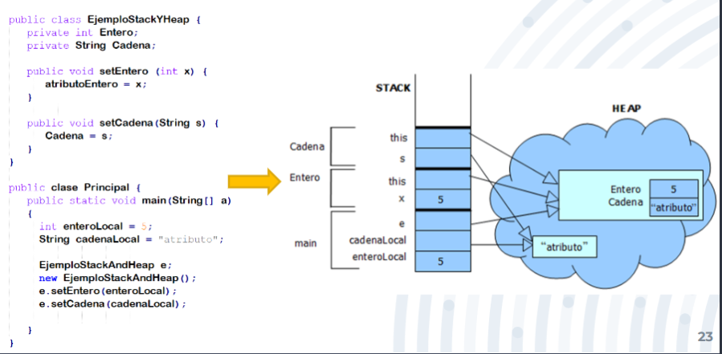
2.4.2 Almacenamiento de Métodos
Una clase no ocupa memoria. Las instrucciones de los métodos se cargan en memoria (en la pila) cuando se crea un objeto de la clase a la que pertenecen.
2.5 Recolector de Basura
Se encarga de buscar en la memoria del programa para identificar qué objetos se encuentra en uso y cuales no, y eliminar los objetos que no se usen mas.
- Corre en segundo plano tras el lanzamiento del programa
- Impacto directo en el rendimiento de un programa porque la eliminación de los que no se usan facilita el acceso a objetos que se están utilizandos.
- Realiza una gestión más eficiente de la memoria (evitandonos tener que hacer frees como en C)
2.5.1 Proceso Básico de Marcado y Borrado
- Marcado: Se identifican qué zonas de la memoria están siendo usadas y cuáles no, lo cuál puede ser muy ineficiente si se deben analizar todos los objetos en el sistema
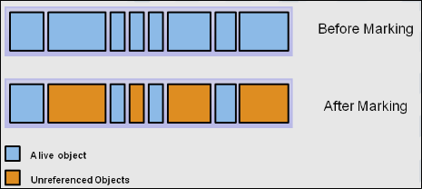
- Borrado normal (op1): se eliminan de memoria los objetos que no tienen referencias asignadas durante más tiempo y mantiene una lista de posibles referencias a la parte de la memoria que puede ser utilizada.
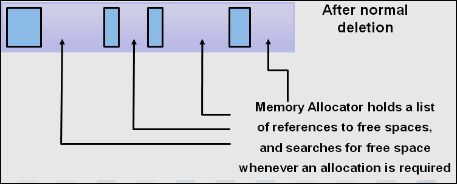
- Borrado con compactación (op1): para mejorar rendimiento, además de borrar los objeto no referenciados, se compacta la memoria, moviendo los objetos referenciados a posiciones de memoria consecutivas.
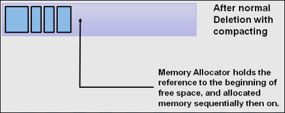
Sin embargo las operaciones de marcado y compactación son muy ineficientes, por lo que debemos cambiar el esquema de gestión de memoria.
2.5.2 Estructura
En la mayoría de los programas, el uso y la eliminación de los objetos no sigue un comportamiento uniforme a lo largo del tiempo:
- El tiempo de supervivencia de los objetos es pequeño
- A medida que pasa el tiempo, cada vez se mantienen en memoria menos objetos
Dividimos la memoria en varias partes, llamadas generaciones, para facilitar la gestión de la vida de los objetos.
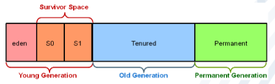
- Young generation: donde se almacenan los objetos recién creados, a los que se les asigna una fecha. Está formada por el eden space y el survivor space (
Y ). - Cuando se llena se lanza una recolección de basura menor donde todos los threads se paran (RB MINOR). Es muy rápida y puede ser optimizada si se tienen que eliminar muchos objetos.
- Los objetos que hayan sobrevivido hasta llegar a la edad umbral se trasladan a la generación vieja.
- Old generation: almacena los objetos de larga duración
- De manera muchos menos frecuente se lanza una recolección de basura mayor donde todos los threads se paran (RB MAYOR). Es mucho más lenta que la menor porque involucra a todos los objetos vivos.
- Permanent generation: almacena las clases y métodos usados durante la ejecución del programa
- Se llena en tiempo de ejecución con metadatos sobre las clases que se utilizan durante la ejecución del programa (carga dinámica)
- En versiones posteriores se sustituye por el metaspace
2.5.3 Funcionamiento del método Avanzado
-
Al inicio del programa la generación joven está vacía. Cualquier objeto recién creado siempre se almacena inicialmente en el eden.
-
Cuando el eden se llena, se lanza una recolección de basura menor en la que se eliminan objetos que no ser van a usar (con referencia null).
-
En la RB minor, todos los objetos que son usados (referenciados) se mueven al espacio
, mientras que los objetos no usados (no referenciados) se eliminan del espacio eden. -
En la siguiente RB minor, los objetos usados del eden se mueven al espacio
, y los objetos del espacio se mueven al espacio aumentando su edad, y se eliminan del espacio los no usados. -
En la siguiente RB minor, todos los objetos usados del eden se mueven al espacio
, mientras que los usados del espacio se mueven al espacio aumentando su edad, y se eliminan del espacio los objetos no usados -
En cada RB minor se comprueba si los objetos usados superan una determinada edad (8 en las imágenes) en cuyo caso son promocionados a la generación antigua, aumentando su edad
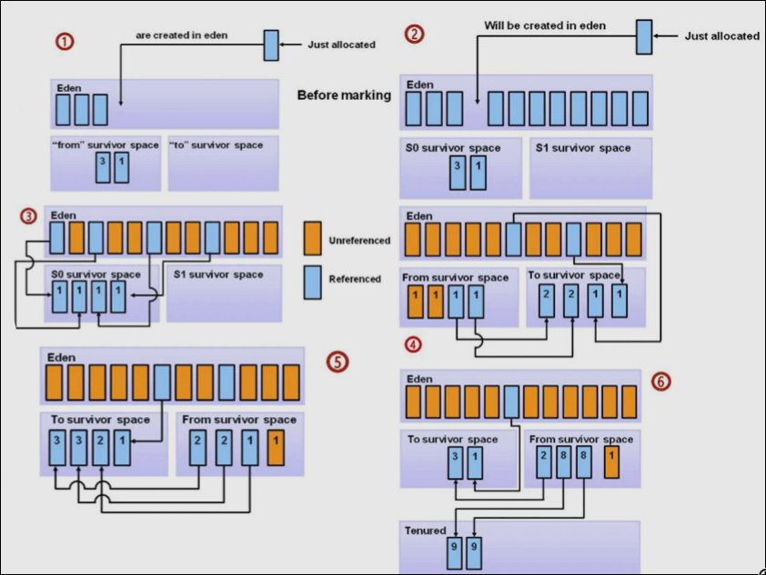
2.5.4 Gestión Avanzada de Referencias
Eliminar una referencia no elimina al objeto de la memoria, simplemente hace que deje de apuntar al objeto. Esto deja al objeto sin dueño, y por tanto puede ser eliminado por el recolector de basura.
MiObjeto obj = new MiObjeto();
obj = null; // Aquí, la referencia 'obj' deja de apuntar al objeto
MiObjeto obj = new MiObjeto();
obj = new MiObjeto(); // Ahora 'obj' apunta a un nuevo objeto, la referencia anterior se pierde
void miMetodo() {
MiObjeto local = new MiObjeto();
// ... aquí 'local' existe
} // Al salir del método, 'local' desaparece automáticamente
List<MiObjeto> lista = new ArrayList<>();
lista.add(new MiObjeto());
lista.remove(0); // Se pierde la referencia desde la lista
Existen 4 tipos de referencias que se diferencian entre sí en cómo las maneja el recolector de basura. Son heredados de la clase Reference
-
Referencias fuertes:
- Son el tipo de referencia por defecto en Java. Se crean automáticamente cuando se instancia un objeto, es decir, cuando haces algo como
Object obj = new Object(). - El recolector de basura elimina el objeto cuando no hay ninguna referencia fuerte apuntando a él (apunta a
null).
- Son el tipo de referencia por defecto en Java. Se crean automáticamente cuando se instancia un objeto, es decir, cuando haces algo como
-
Referencias débiles :
- Se crean usando la clase
WeakReferenceponiendo como argumento la referencia fuerte a la que apunta (al objeto al que apunta) - Aunque se haya creado una referencia débil, el recolector de basura puede eliminar aun así la referencia fuerte a la que apunta
- Si sólo quedan referencias débiles a un objeto, el recolector de basura puede eliminar ese objeto.
- El acceso a la referencia fuerte no está asegurado, podría devolver
null: se realiza conget - El recolector de basura las elimina de memoria cuando no apuntan a una referencia fuerte o su referencia fuerte es
null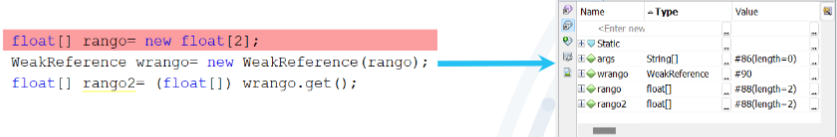
- Se crean usando la clase
- Referencias suaves:
- Se crean usando la clase
SoftReferenceponiendo como argumento la referencia fuerte a la que apunta (al objeto al que apunta). - El acceso a la referencia fuerte está asegurado, aunque se elimine
- El recolector de basura elimina los objetos referenciados únicamente por referencias suaves sólo cuando el sistema necesita liberar memoria.
- Se crean usando la clase
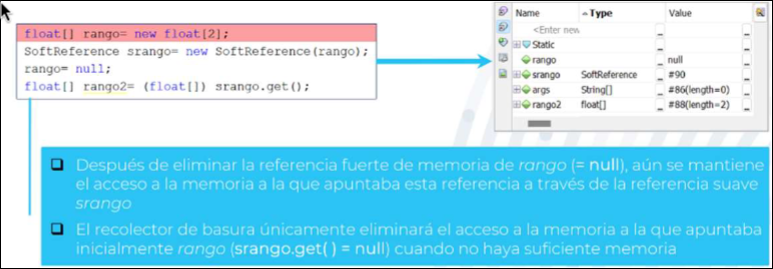
- Referencias fantasmas:
- Se crean usando la clase
PhantomReference, pasando el objeto y unaReferenceQueue - El método
get()siempre devuelvenull. - Sirven para ser notificados cuando el objeto está a punto de ser recogido por el GC, permitiendo realizar tareas de limpieza.
- El objeto referenciado se pone en la cola antes de ser eliminado, pero nunca se puede acceder a él a través de la referencia fantasma.
- El acceso a la referencia fuerte está asegurado, aunque se elimine, se realiza a través de la cola con
poll.getsiempre devuelvenull, las referencias fantasmas están pensadas para acceder a la memoria cuando las referencias fuertes no están disponibles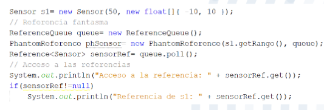
Usos principales:
- Referencias débiles: para acceder dinámicamente a la referencia fuerte de un objeto hasta que este ya no esté disponible, evitando crear referencias indiscriminadas (aliasing).
- Referencias suaves y fantasmas: para hacer cachés en memoria, de manera que se pueda acceder a referencias fuertes que ya no están disponibles en memoria.
2.6 Clase String
Los objetos que son cadenas de texto se puzeden crear de dos formas diferentes:
- Directamente: asignando una cadena de texto al objeto, en cuyo caso se almacenan en una zona del montón llamada String Pool, de modo que cada vez que se asigna la misma cadena de texto, se apunta a la dirección que la contiene
- Indirectamente: el objeto se crea usando un constructor de string, en cuyo caso se almacenan en el montón, pero fuera del String Pool, aunque tenga el mismo valor que una cadena previa.
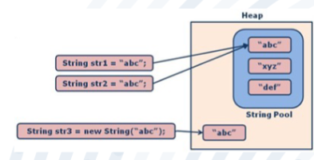
String es una clase de Java, pero no se comporta como el resto de las clases en lo que respecta a la asignación entre objetos cuando se usan directamente cadenas de texto. Una cadena de texto es un objeto inmutable, es decir, una vez se ha reservado memoria y se le asigna un valor dado, no se puede modificar El uso indiscriminado de cadenas de texto puede disminuir mucho el rendimiento.
Si se van a realizar múltiples modificaciones sobre una cadena de texto, no se debería de utilizar la clase string. Se debería usar la clase StringBuffer si se vana usar múltiples operaciones sobre cadenas de texto, ya que no se reserva espacio de memoria cada vez que se genera una cadena de texto.
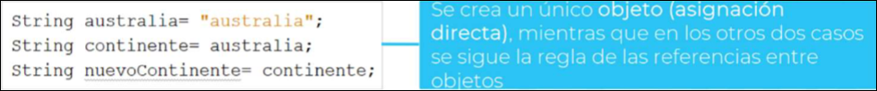
2.7 Método Equals
- Dos objetos son iguales si ocupan la misma posición de memoria. Esto es una condición muy restrictiva, ya que podrían existir dos objetos con los mismo atributos en posiciones de memoria distintas.
Coche coche1 = new Coche();
Coche coche2 = coche1; // coche1 y coche2 apuntan al mismo objeto
System.out.println(coche1.equals(coche2)); // true
- Dos objetos son iguales si son del mismo tipo y si los valores de todos sus atributos también son iguales. Eso obliga a que los dos objetos tengan los mismos valores de los atributos en el momento de la comparación y que los atributos sean inmutables.
equals es un método que indica si un objeto (el argumento) es igual a otro (desde el que se invoca). Todas las clases lo tienen, pues es heredado de la clase Object
- La implementación heredada sigue la primera opción, ya que lo único que se conoce de cualquier objeto es su referencia.
- Se debe reimplementar comparando atributos inmutables, de modo que dos objetos son iguales si estos atributos tienen el mismo valor.
@Override
public boolean equals(Object obj) {
if (this == obj) {
return true; // Mismo objeto en memoria
}
if (obj == null || getClass() != obj.getClass()) {
return false; // Distinto tipo de objeto o null
}
Coche coche = (Coche) obj;
return this.matricula.equals(coche.matricula);
}
[! Buenas Prácticas]
- Todos los objetos que realicen comparaciones deben tener reimplementado el método `equals
- Los atributos inmutables pueden ser tipos primitvos, wrappers y strings.